ReLeaf In‑Line
Flow‑Cell Photometer
A subsystem of the ReLeaf bioreactor.
The In-Line Flow-Cell Photometer, is the optical density monitoring subsystem of our bioreactor. It has the ability to draw continuous, live data from the lumen loop of our hollow fiber bioreactor by passing the medium in which our bacteria lives through a 2mm wavelength path flow cuvette where the optical density of the bacteria in solution is then recorded and plotted on our continuous data graph. This can be done without ever drawing a sample of our solution. This document reports the more specific design and decision-making process of developing this advanced system and helps provide a background for this specific component of our bioreactor for more easy reproduction of our design. We acknowledge that not everyone will be requiring the entire assembly guide for our bioreactor and might only want to replicate this portion of our hardware, so we provided the material list below and a shortened assembly guide at the bottom of the document.
The photometer's eight design, build, test and learn cycles, from the bench light path to the TiO2 calibration, are written up on the bioreactor page, where the team placed them.
Last updated 28 September 2026
Final Product
1.1 Material List and Pricing
The full bill of materials is provided below, itemized to the individual component with part numbers and unit costs in the currency of USD. We list out each part individually to ease any individual who wishes to rebuild the device with full clarity of each component.
Each component is introduced one by one in the 3D walkthrough at the top of this page.
| Component | Part number / spec | Quantity | Unit cost | Total cost |
|---|---|---|---|---|
| Amber LED | , peak wavelength nm, FWHM nm | |||
| Jumper Wires | ||||
| Reference light sensor | 1 | |||
| Sample light sensor | 1 | |||
| Beamsplitter | , nominal split ratio (90-10) | 1 | ||
| Flow cuvette | , 0.2 mm path length | 1 | ||
| Focusing lens | 1 | |||
| Microcontroller | Arduino UNO Q | 1 | ||
| Passives (resistors, etc.) | , itemized to individual resistor | |||
| 3D Prints | All printed components including angled stand and TPU lining for close fitted sensors without any freedom. | 8 prints | ||
| Total essential-parts cost | ||||
1.2 Final Photometer Assembly
We had __ total cycles of tuning to optimize our photometer setup and the final setup we landed on was the diagram shown above. This photometer system is placed within our larger bioreactor system and empowers farmers with the capability to keep track of the bacteria density within the bioreactor in order to be reminded when medium or a refill of our bacteria must be added into the bioreactor to maintain working capability.
Despite having developed a more compact and simple design and proven that it shows little to no deviation in the accuracy of its bacteria optical density readings, because we lacked the time to integrate it within our commercial bioreactor system, we kept the setup of our second-last photometer design as our final photometer assembly.
1.3 The Long Run, Traced
A continuous in-line record spanning 336 hours and 2132 logged points, captured without removing a single sample. We have not found a comparable continuous in-line OD record in prior iGEM hardware work, but we have no surveyed figure to cite, so we make no claim about the margin.
Traced from the live dashboard at 14 d 0 h 11 m: 336 h, 2132 points. The band is the raw scatter, the line its median. Traced endpoint OD600 1.392 against 1.3864 shown on screen, a 0.4% check on the trace.
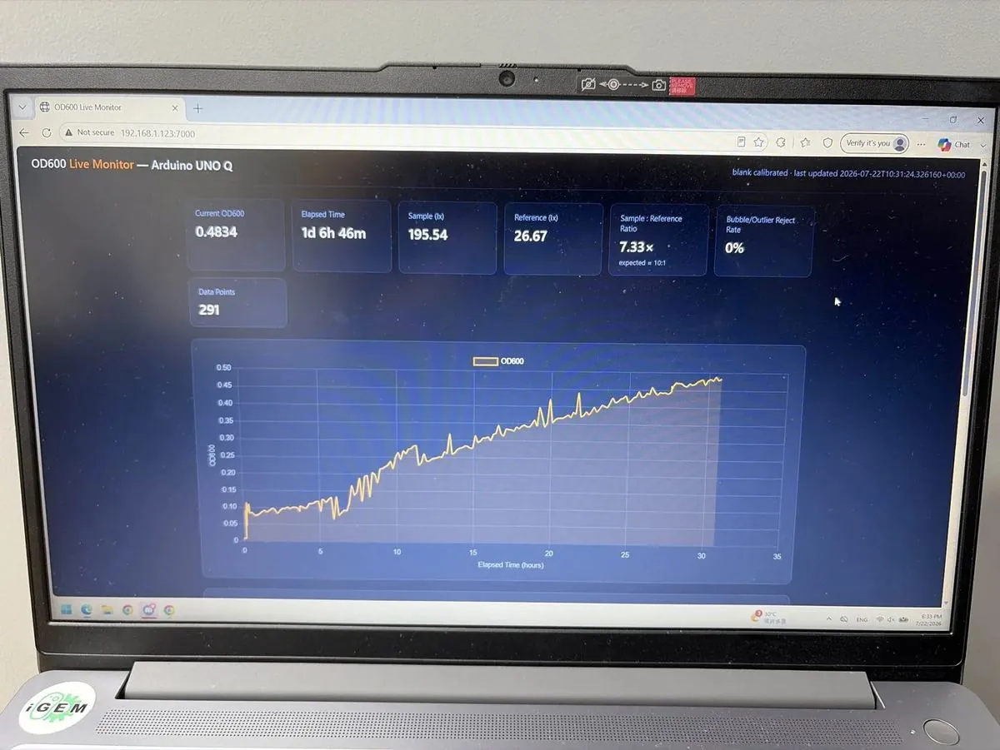
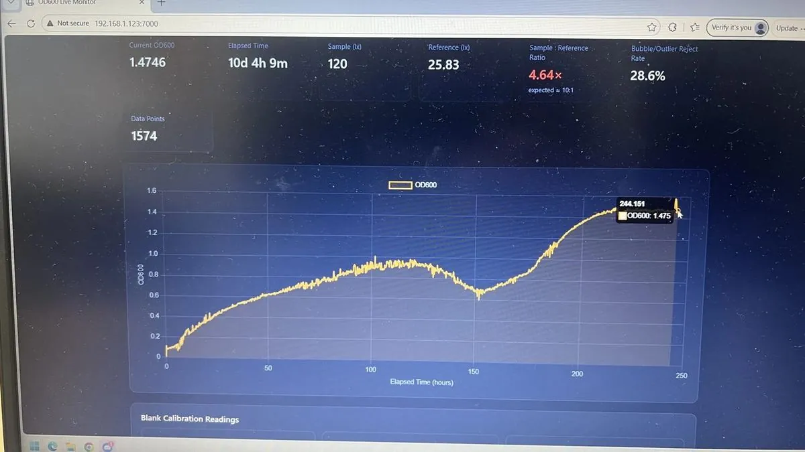
Our first explanation for the dip was contamination (a second organism taking over), and it was wrong. The recirculation pump had failed, which Chars confirmed on inspection before replacing it. We left the wrong guess in the notebook. The pump failed with nobody watching and the trace caught it, which is the job the instrument was built for. What optical density alone still cannot separate is lysis from sporulation or settling, so the decline is reported as observed, not as a death phase. The flush and reblank that would have told fouling from biology was never run; once the rig was torn down the chance was gone.
The run itself (V4 at 22 °C, past 400 hours) is written up as photometer cycle 5 on the bioreactor page.
Measurement Principle
Sections 2.1 and 2.2 are still being written by the team. Until then: the photometer reads light through the culture on one sensor and light split off before the culture on a second, and reports optical density from their ratio, so a drift in the LED shows up in both and divides out.
Optical Design
3.1 Light Path and Component Order
ReLeaf is a single-wavelength transmission photometer built around an amber LED, a beamsplitter, a short-path flow cuvette, and two light sensors. Light travels from the LED, through a paralleling lens, through a slit, and into a beamsplitter. The beamsplitter diverts a fraction of the beam to a reference sensor before the light reaches the sample; the remaining beam passes through the flow cuvette and lands on the sample sensor (the diagram in 1.2).
3.2 Path Length and Range Calculation
In progress.
3.3 Geometry and Spacings
The spacings were measured on the bench in photometer cycle 1 (bioreactor page): 5.5 cm from the LED tip to the lens, 10 cm from the lens to the centre of the beam splitter, and 2 cm from the beam splitter to each sensor.
3.4 Wavelength Selection
In progress.
3.5 Beam Splitting and Reference
In progress; see the callout in Part 2 and 4.5.
3.6 Stray Light Control
In progress; see 4.3 for the snap-on covers.
Mechanical Design
4.1 Design Requirements
Our photometer required countless iterations and had to overcome many design challenges to become usable in the testing process.
Firstly, the flow cuvette that was placed within our photometer had to have no bubbles flowing through for a large majority of the testing period in order to generate data reliability.
A second, the light sensors, both our sample and our reference lux sensors could not be affected by external lighting changes in order to allow for photometer usability in all environments and constant (data retrieval, extraction, collection).
A third requirement is that the photometer has to have structural stability and good tolerances to allow for easy assembly without inconsistency in build quality or data while running.
4.2 Modelling Approach
During our 3 dimensional design period of our photometer, we visualized a strong timeline for improvement. Despite understanding the need for darkness, an enclosed space within our photometer, and also strong structure, we also understood the importance of modifiability and accessibility within our design, especially during the earlier stages of the design process.
This led us to begin by designing a high-tolerance, shifting system in which we could manually tighten and untighten to shift the positions of our sensors, lenses, and more. We also had our system completely open to outside light so that we could still make manual adjustments easily. To test, we just shut off the room lights and closed all of the doors and windows to ensure that our measurements didn’t get transposed by external light factors.
Once we were able to make easy tests however, we shifted to more specific and larger design changes that locked things more in place and began to enclose our photometer light path within a dark chamber. This allowed us to advance our mechanism closer to the final design.
4.3 Mounting and Tolerances
In our final design, we still wanted to prioritize easy inner accessibility in case our light path shifted, or our sensors accidentally broke and needed to be replaced. This led us to design with the goal of having the capability of smooth removal of the enclosed structuring in mind.
To achieve this, we used a manual snap-on fastening design. We created an indentation along the entirety of our photometer body in which we could attach our cover for our photometer on. This made it so that we could easily remove it in the case of needing to make changes to our photometer.
Also, to maximise the quality of our prints, we didn’t want to print the entirety of our photometer body as one piece. This is because diagonal prints require lots of support prints and make the dimensions inaccurate and the entire system visually unappealing. So, to fix this we separated the base from the body and created a diagonal inserting point where we could connect our photometer body and base. This fixed both issues.
Lastly, tolerances are an extremely integral part in gathering accurate data. For many of our earlier iterations, the tolerances of our beam splitter, paralleling lens, and lux sensors were all too high. We didn’t want to risk reducing the tolerances by too large of increments to avoid wasting the entire print, this led us to use a combination of multiple 3D printing filaments to allow for tight fitting. We used PLA, a cheap and hard plastic, for the large structure of our photometer but lined the slots for all of our smaller photometer components that resided on the inner region of the system with TPU, a rubber compound that has flex and high friction, allowing for tight fitting without damaging any of our components. This change gave us a large jump in data accuracy across long test runs.
4.4 Orientation
Another important decision of our photometer design was the orientation of our entire photometer. We began with a horizontal-lying design in which the liquid of our bioreactor would travel through the sensor-measuring region across the horizontal plane, however, we quickly realized that bubbles got trapped in that region very easily, leading us to transition to a vertical-standing design so that bubbles could travel through our flow cuvette more efficiently.
This change didn’t make the drastic difference we hoped and thought it would, however, upon manipulating the standing design, we realized tilting it at a 10 degree angle would cause almost all of the bubbles to leave within around a quarter of a second. This meant that placing our photometer at an angle could save the reliability of our data readings.
This change has stuck with our photometer throughout the rest of the design iterations and still hasn’t proved unreliable.
Drag to compare any two builds in the same frame and at the same scale.
4.5 Individual Part Breakdown
Our photometer can be viewed as three distinct portions. The first of which is the LED housing compartment where our 600nm wavelength light is shot toward our sensors from. This one required minimal adjustment over the course of our __ iterations, only a change to utilizing a designated LED holder, which held our LED more securely in place. The next is the light traveling region. This portion has our paralleling lens and is the longest portion of our photometer. A large percentage of this portion however, is just empty space that is needed for the light to reach the focus of our lens at the right position. The last portion is the most complicated region. This portion includes the 2mm light slit, which reduces the width of the light hitting our sensors for more specific and accurate readings; the flow cuvette; the beam splitter, which splits our one light path into two, one that travels forward through our flow cuvette and solution and into our sampling lux sensor, and another that gets split at a 90 degree angle with 10% of the total light intensity into our reference sensor where there’s no flow cuvette; and the lux sensors themselves. More details about this portion can be found in Section 3.1 and 3.5.
Electronics and Firmware
5.1 Breadboard, Sensors, LED
Our finalized Photometer doesn’t use a breadboard but instead uses a soldered PCB connected to an Arduino Uno Q. The Arduino Uno Q is a mini-computer in and of itself, meaning that we can run the code purely by just providing a power source to it and do not need any computer constantly plugged into it. This allows us to move one step farther into creating a cheap and accessible bioreactor but also gives us the luxury of reducing one of the other failure points of our photometer sensing (computer-arduino wire unplug).
Our Arduino has a limited number of ground ports. This means that we need to link up all of the ground wires of our sensors, LED, and transistor. The transistor is a more complex component and allows us to provide a completely different voltage to the LED versus the sensors and also allows us to turn the LED on and off without affecting the sensors running. We want this function because as we scale up our bioreactor, the voltage that we provide our LED might need to increase as well. This means that it will be much safer and more sustainable for our bioreactor if we don’t keep the LED on 24/7.
The transistor is made up of three different parts, the collector, the base, and the emitter. The LED ground wire connects to the collector side of our transistor, the D3 port of the Arduino connects to the base side of our transistor after passing through a 1.2 kiloOhm resistor, and the base output passes through a 10 kiloOhm resistor before combining with the output of the emitter side of our transistor to all finally combine with the sensor ground wires to plug into one Arduino ground port.
Also, because we have a sample sensor and a reference sensor, we connect both of the SDA and SCL ports together and connect them both to the same Arduino ports as well. This complex way of wire management helps allow us to control multiple sensors from the same Arduino microcontroller at the same time.
The power that is required to be input from our Arduino is different for our sensors and for our LED. Our LED currently has an input of 5V but might need to increase in future work once we scale up our bioreactor and our sensors need a 3.3V power input to run smoothly. This means we can combine the power inputs of our two Lux Sensors but must keep the LED separate.
After all of our wiring on the PCB, we are left with 5 wire outputs, the SCL, the SDA, the D3, the 3.3V, the 5.5V, and the ground port, making the last step of setting up the photometer extremely simple.
5.2 Data Acquisition and Filtering
A bubble-and-outlier rejection filter operates on the incoming stream of solution, and the dashboard reports the rejection rate live. We determine this spread by taking 14 lux readings in a short burst. If a bubble were to drift past, one or two readings would be shot way higher than it’s supposed to. We cannot use the average of these 14 readings and instead must use the median (the middle number) because the average will be offset and dragged upward, however, the median rarely moves. This makes the median a bubble-proof estimate of the true value. After determining the medians for these 14 readings shot in a burst, we take the 13 distances of the points from the median point. By taking the median of these distances, you’re able to determine how much clean readings wobble. If our readings are tight, the MAD (how much the clean readings wobble) will be low. The opposite stays true. The trick for both of these are similar. If you take the median of the distances, one giant bubble won’t inflate the spread. This filter rejects everything beyond the median ± 3*MAD, rejecting everything that exceeds it. The rejected points are then removed from the OD measures, keeping our data clean. We report what fraction of readings get thrown out and that is our rejection percentage. If the rejection percentage exceeds 50% of our total readings, then our software will show the number as red and will tell the user that there are excessive bubbles that need to be fixed within the bioreactor.
Take 14 lux readings in a burst
Median of the 14: bubble-proof centre
Median of the 13 distances: the MAD
Reject beyond median ± 3·MAD
- Mean
- Median
- MAD
- Rejected
Set the bubbles to zero and the filter still throws readings away. That is not the demo being wrong: on a burst of only fourteen, the MAD is itself a noisy estimate, so a clean burst loses about one reading in fourteen at our ±3·MAD cutoff, and half of all clean bursts lose at least one. At ±5 it is one burst in ten. Our own notebook records this rate coming out at 0% on one run and 43% on another with the rule never written down, which is the same problem seen from the other end. Slide the cutoff to see where it settles.
5.3 OD Calculation
Each sensor on our photometer returns an illuminance value in lux. The sample sensor reports light transmitted through the culture; the reference sensor reports light diverted before the sample. Reported OD600 is derived from the sample-to-reference ratio, which normalizes each reading against the LED light source intensity and thereby corrects for drift in the LED output over the course of a multi-week long run if it degrades.
The step by step process for calculating OD is first calculating K as Sample Sensor (Blank through cuvette and medium no bacteria)/Reference Sensor (Blank not through cuvette or medium).
Once we capture the value of K at the start of our live reading, we can use the following formula to determine every live reading.
User Interface
Readings leave the microcontroller and are served to a live web dashboard on the local network, reachable at port 7000 on the device's address. The dashboard displays current OD600, elapsed run time, raw sample and reference readings in lux, the sample-to-reference ratio, the bubble-and-outlier rejection rate, and a running count of logged data points. It plots OD600 against elapsed time in hours and updates continuously without interrupting the run.
The acquisition interval was set to 10 minutes and can run for 300+ hours continuously without failure. The interval can be changed during a test, and a reading can be taken instantaneously at the click of a button.
From the team's July photometer draft; the September draft lists this section (dashboard layout, fields, how it is served, what an operator does with it) as still to be written.
Calibration
7.1 Blank Protocol
Our blanking protocol for our photometer is extremely important as it played a large role in inaccuracies in our early iterations. Our external OD600 measuring tool is the Bio-Drop and is normally calibrated off of distilled water, however, because we’re measuring the OD600 of our bacteria in particular, we need to account for the absorption of 600nm wavelength by our nutrient medium that cultures our bacteria. This change led us to have almost entirely accurate data that aligned strongly with the Bio-Drop readings.
7.2 Calibration Procedure
Waiting on the SiO2 calibration. The TiO2 calibration, which found that the raw output already agrees with the Bio-Drop to a median 3.8%, is photometer cycle 6 on the bioreactor page.
Simplified Photometer
8.1 Rationale
We believe that our current photometer still has room for improvement. The pricing of the flow cuvette that allows our photometer to take live, continuous data directly from our bioreactor system increases the cost of the entire system by a large margin and in order to provide more access to this bioreactor, we began working towards reducing the costs of the rest of the photometer itself. The other more costly components of our photometer include the beam splitter and the paralleling lens. The beam splitter is a must-have in our photometer as it completely ensures long-term usage without reading imprecision; this just leave the paralleling lens to make changes to.
8.2 Design Changes
We used a paralleling lens in order to straighten the light path of our LED, however, by switching the shape of the output of the LED light path itself, either through a sanded flat cap or switching the type of LED we use entirely, we believe we can shrink our photometer by ⅔ and reduce the cost of the photometer by $70.
8.3 Optical Consequences
Have not tested yet!!
8.4 Current Status
Not yet!
Specifications and Future Implications
9.1 Future Use
Our photometer has the capability to assist any student or professor in measuring the optical density of their solution for 600nm wavelength live during growth runs. This completely removes the reliance on sampling and destroys the chance of human error in that entire process. These benefits come at a relatively cheap cost of around $150. This is pale in comparison to the drastic prices of commercial spectrophotometers for lab use in the market currently. The Bio-Drop spectrophotometer that we compared our photometer against during our calibration process costs a whopping $15,000.
For anyone who requires a photometer that measures optical density at 600 nanometers in the future, this new mechanism that we designed reduces the barrier to entry to near none. By breaking this barrier, we make an in-line photometer publicly accessible and easily usable.
We hope and believe that future uses for or developments to this photometer design could benefit countless individuals striving to run their own experiments.
9.2 Comparison to Existing Approaches
| Approach | Strength | Limitation |
|---|---|---|
| Benchtop cuvette spectrophotometry | The accuracy reference, and what we calibrate against | Operational rather than optical: every reading removes material from the culture, so it is disruptive, discontinuous and impractical overnight |
| Immersed probes | Continuous readings without withdrawal | Occupy vessel volume, complicate sterilization, generally expensive |
| Clamp-on external sensors (ClampOD) | Attach to existing tubing; simple and cheap | Path length fixed by whatever tubing is already present, precisely the constraint that limits high-density accuracy |
| Commercial in-line monitors | Solve the problem well | Priced out of reach for most student teams |
| ReLeaf | Continuous in-line measurement at a short, chosen 0.2 mm path length, at student-project cost | Does not replace a benchtop reference; calibrated against one, and bounded by the same scattering physics |
Limitations
10.1 Spectrophotometer
Our current photometer was purely designed to measure the Optical Density of the bacteria within our medium solution live at 600 nanometers and was not originally planned to be able to measure a variance of wavelengths. This means that the design must be adapted and adjusted in order to integrate a light source that contains multiple colors or even light from outside the visible spectrum. Our design can likely be easily converted into other single-wavelength-measurement-requiring designs, but will likely fall short when needing to do multiple wavelengths concurrently.
Our future work includes the use of sensors that are able to capture a range of wavelengths (we’ve bought them to capture ___ light for …), but we have not yet purchased, integrated, nor tested using a light source with the ability to express multiple wavelengths.
10.2 Assembly/Blanking Process
In order to minimize our photometer and due to a lack of testing time, we were unable to test different LED clip holders. This means that when placing the led into the socket, it doesn’t always point entirely straight. This doesn’t mean that our readings are going to be off however. By spinning the LED inside the clip during the assembly process, one can still find an orientation in which the light path lines up directly to the sensors; this just increases the assembly time of the photometer by a few minutes.
Reproduction
The team's shortened assembly guide for the photometer: parts, tools, printing, then the LED and lux-sensor wiring, each with its verification test.
PartsGet materials and tools Everything the build uses, down to the crimp pins.
Get materials
- 2x GY-302 Sensor
- 1x 90/10 Beam Splitter
- 1x Paralleling Lens
- 3x 12in+1in 20AWG black wires
- 3x 12in+1in 20AWG red wires
- 2x 12in+1in 20AWG green wires
- 2x 12in+1in 20AWG blue wires
- 1x 24in 20AWG red wire
- 1x 24in 20AWG black wire
- 2x 2.0x45mm heat shrink tube
- 1x 2x8cm PCB
- 1x Arduino Uno Q
- 1x 1.2kOhm resistor
- 1x 10kOhm resistor
- 1x 330Ohm resistor
- 1x Roll of Solder
- 1x UTC PN2222 transistor
- 2x 5pin 2510 female connector
- 4x 2pin 2510 female connector
- 2x 5pin 2510 male connector
- 4x 2pin 2510 male connector
- 18x 2510 terminal crimp pin
- 10x Female DuPont crimp pin
- 2x 5pin Female DuPont crimp pin housing
- 10x Bent Male header pins (all connected together)
- 1x 5V 600nm LED (no internal resistors)
- 4x 5mm 10-32 screws
- 2x 10-32 Nylock
Get tools
- Wire Stripper
- Pliers
- Soldering Iron + soldering sponge
PrintPrint the 7 photometer parts A Bambu Studio project file with the plates already laid out.
- Download the 7 3D Prints for the photometer (Preset file: Photometer Print Project File.3mf)
- Parts layout
- Change plate 1 filament to petg (cf optional)
- Paint tpu on plate 1 parts
- Print settings
- Slice each plate & print
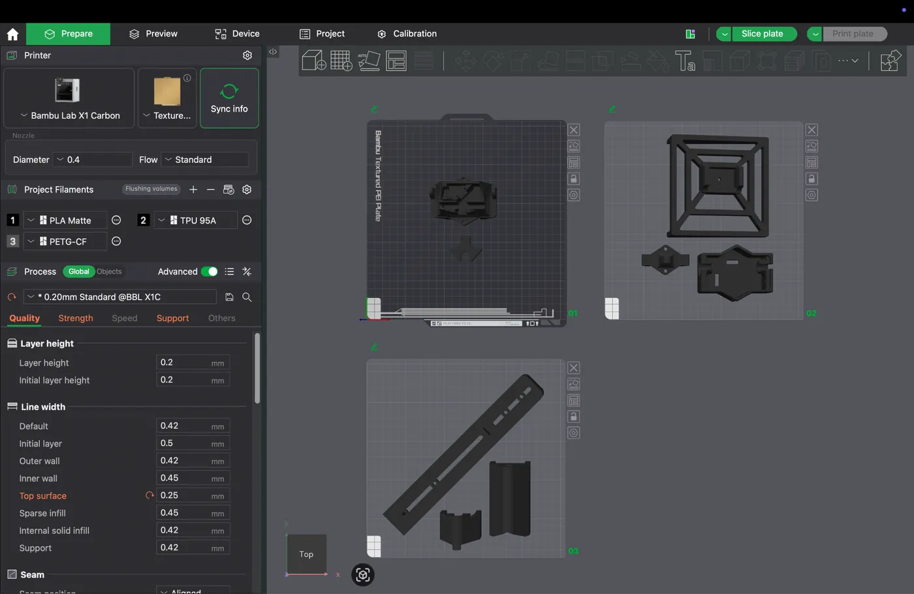
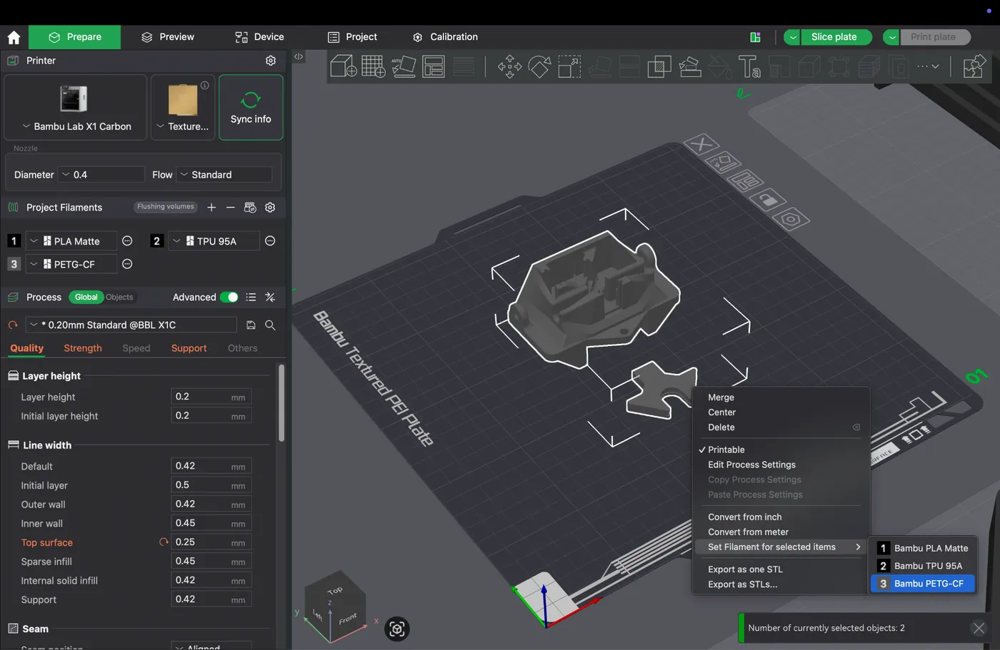
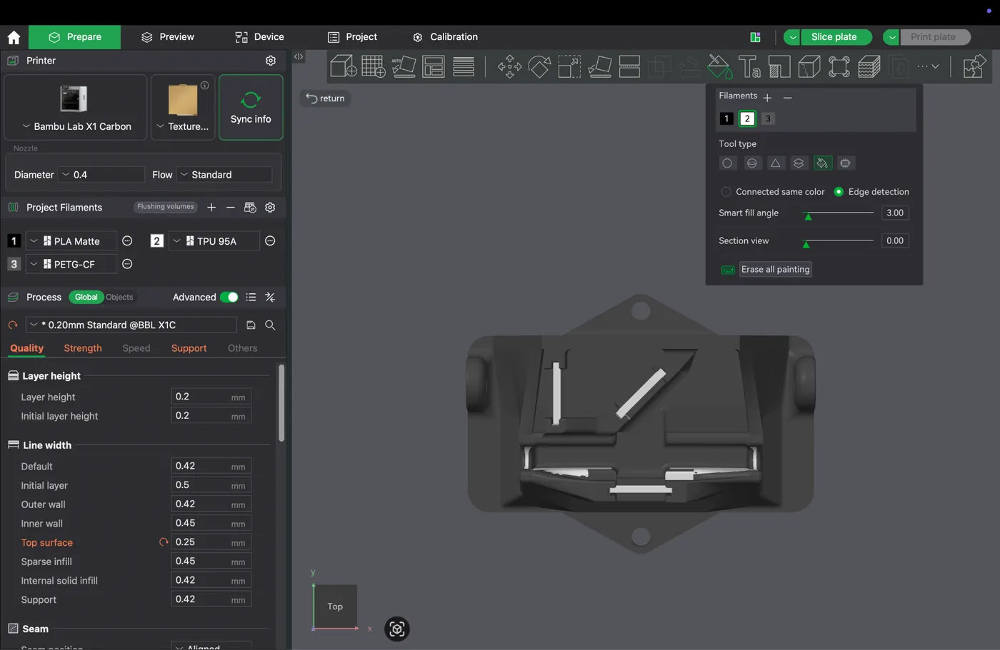
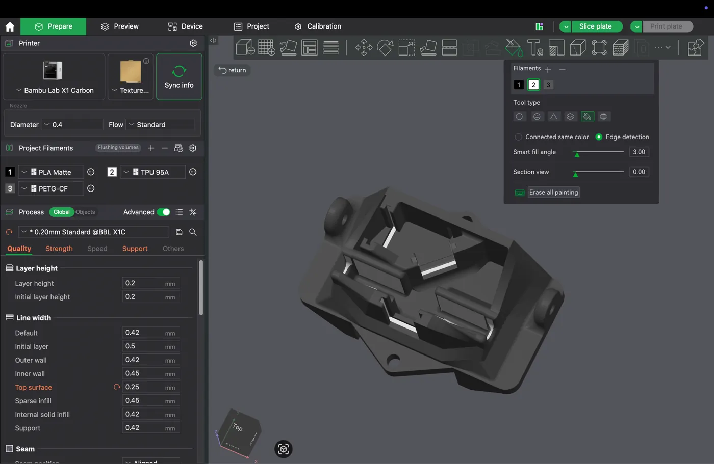
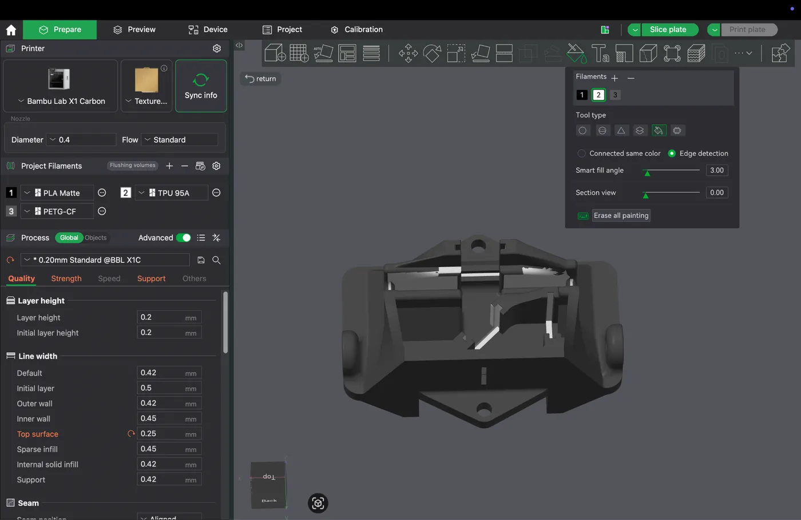
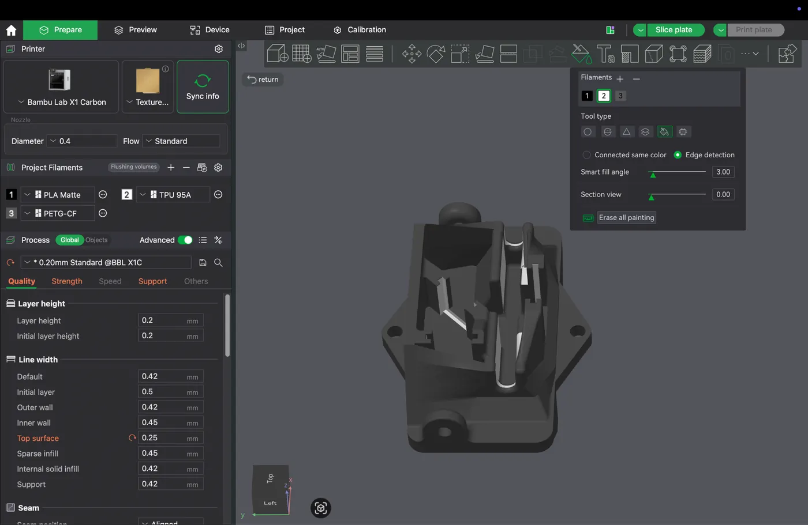
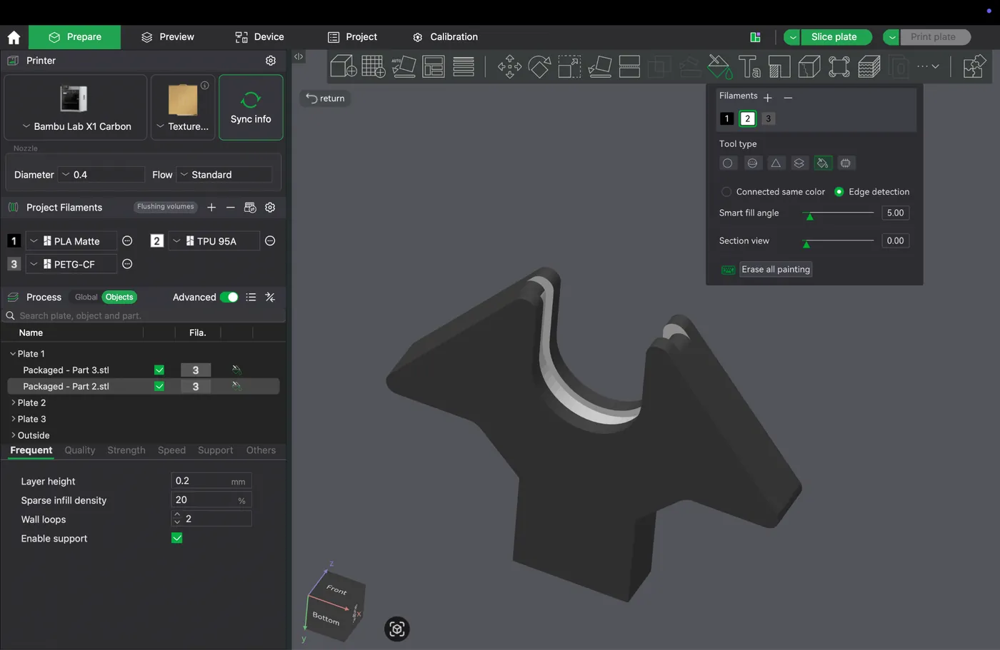
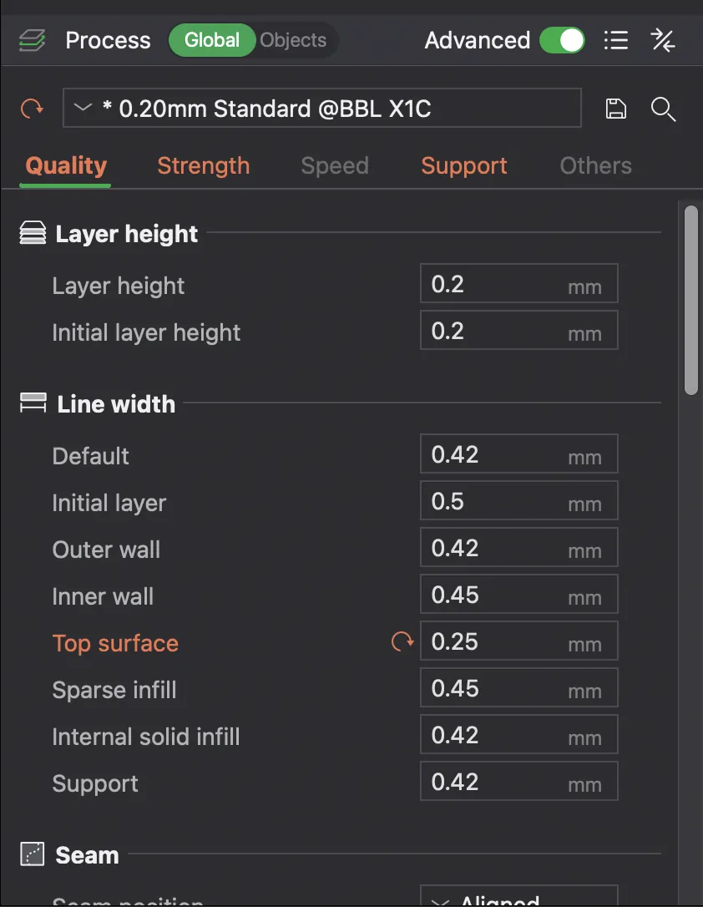
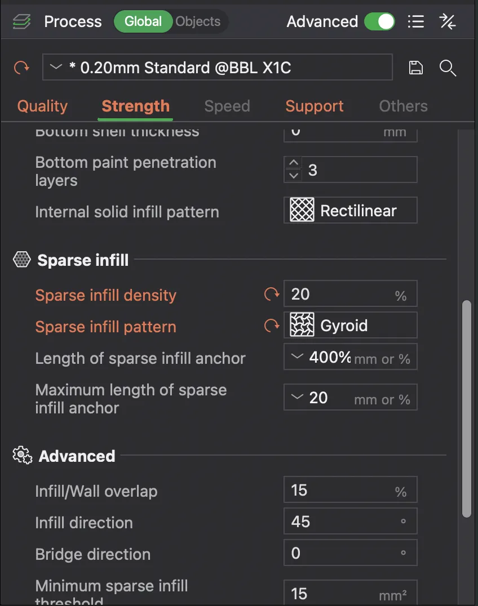
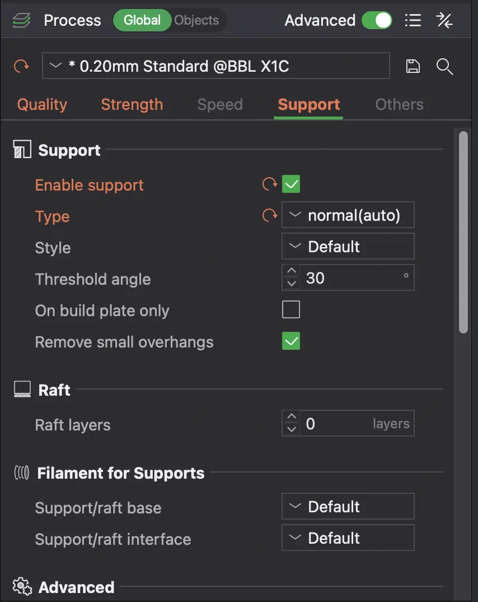
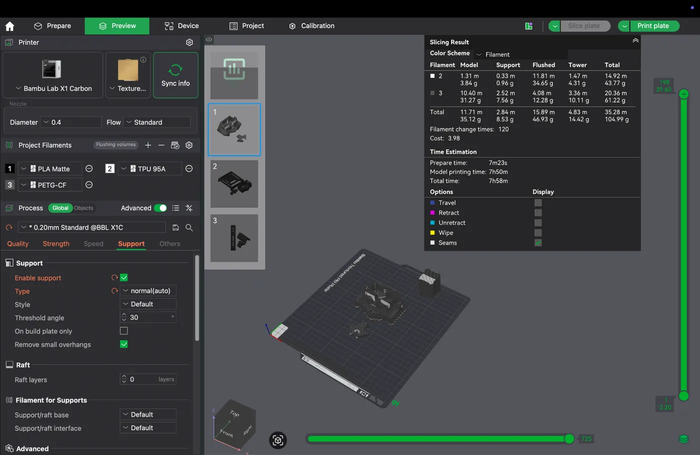
- Printer
- Bambu X1C
- Material
- Black PLA, 95A TPU inner lining
- Layer height
- 0.2 mm
- Infill
- 15% gyroid
- Top surface
- 0.25 mm
- Slit width
- 2 mm
Every other setting left at default. The 2 mm slit is wide enough to entirely encompass the sensors while reducing reflected light that could blur the distinction between the sample and reference environments.
ElectricalLED Solder and crimp the LED lead, then fit its 2-pin connector.
Gather materials
- 1x 5V 600nm LED (no internal resistors)
- 1x 24in 20AWG red wire
- 1x 24in 20AWG black wire
- 2x 2.0x45mm heat shrink tube
- 1x Roll of Solder
- 1x 2pin 2510 female connector
- 2x 2510 terminal crimp pin
Gather tools
- Wire Stripper
- Pliers
- Soldering Iron + soldering sponge
Steps
- Wrap the 2 wires around each other until they form a long spiraled wire, leaving ~7.5 cm unwrapped on each side.
- Strip 2.5cm off of 1 side of each LED
- Put a heat shrink tube on each of the two wires
- Wrap the revealed red wire around the positive (longer) side of the LED
- Heat up the soldering iron to 350 Celsius
- Melt some of the solder onto the soldering iron
- Brush the liquid solder onto the revealed metal part of the wires until they’re locked together, making sure not to touch the wire for too long
- Repeat steps 6-9 for the black wire (shorter side of the LED)
- Wait 30 seconds for the wires to cool down
- Bring the heat shrink above to cover the revealed wiring
- Clean the soldering iron on a wet solder sponge
- Place the soldering iron on the heat shrink until it shrinks and holds to cover the revealed wires (do it for both wires)
- Turn off the soldering iron
- Retwist the red and black wires together until tight again
- Strip 0.75 cm off the other side of each LED
- Place the stripped wire into the terminal crimp pin of the red wire
- Ensure that the sharp large triangle parts of the crimp pin overlap with the rubber covers left on the wire
- Use pliers to fold the sharp triangles so that they grab tightly onto the rubber and don’t move
- Use pliers to fold the smaller triangles so that they are in contact tightly with the revealed wire.
- Heat up the soldering iron to 350 Celsius
- Melt some solder onto the soldering iron
- Brush the liquid solder onto the small triangles in contact with the revealed wire (do not get too close to the large triangles) until there’s a clear solid metal bond between the two.
- Press the crimped red wire into the left side of the 2pin 2510 female connector until it clicks and can’t be pulled out, keeping mind of the orientation to match the image (black wire is right side)
- Once done, repeat for the black wire.
- Turn off soldering iron.
ElectricalLux Sensors Crimp ten leads, fit the DuPont and 2510 housings, then solder the header pins.
Gather materials
- 2x GY-302 Sensor
- 3x 12in 20AWG black wires
- 3x 12in 20AWG red wires
- 2x 12in 20AWG green wires
- 2x 12in 20AWG blue wires
- 10x Female DuPont crimp pin
- 2x 5pin Female DuPont crimp pin housing
- 10x Bent Male header pins (all connected together)
- 2x 5pin 2510 female connector
- 10x 2510 terminal crimp pin
Gather materials for Verification testing
- 2x 5pin 2510 male connector
- 10x Bent Male header pins
Gather tools
- Wire Stripper
- Pliers
- Soldering Iron + soldering sponge
Steps
- Strip 0.75cm off both sides of all 10 wires
- Crimp the Female DuPont crimp pins on one end of all 10 wires the same as the terminal crimp pins from the LED for (clamp onto the rubber before clamping onto the revealed wire, then solder)
- Press the Female DuPont crimped wires into the DuPont crimp pin housing until it clicks and can’t be pulled out (match the order and orientation from the images)
- The first housing needs the order of red, blue, green, black, red.
- The second housing needs the order of black, blue, green, black, red.
- Complete Verification Test 1
- Crimp the terminal crimp pins just exactly like the DuPont crimp pins on the opposite end of all 10 wires
- Press the terminal crimp pins into the 2510 female connectors until it clicks and can’t be pulled out (match the order and orientation from the images)
- The order of the wires from the Female DuPont crimp housing should mirror the order of the 2510 female connector (ensure you keep the two DuPont housings separate, the two housings should not connect to the same female connector)
- Complete Verification Test 2
- Take the 2 GY-302 sensors
- Break the 10-long bent male header pins into 2, 5-long bent male header pins
- Place one of the 5-long bent male header pins into the holes of one of the GY-302 sensor, ensuring the orientation matches the image
- Solder (melt solder onto the iron and brush the liquid metal onto the components you’re trying to solder together) the male header pins onto the metal parts surrounding the holes
- Do not let the solder create a metal connection between any of the male header pins or the GY-302 holes
VerifyVerification Tests Two push-fit checks that catch solder creeping into the crimps.
- Try to press the DuPont crimp pin housing into the bent male header pins to ensure that they fit in.
- If failed, redo the steps for all of the parts in your DuPont crimp pins + housing because the soldering on the crimp pins went too close to the rubber on the wire, blocking the entry for the male header pins.
- If succeeded, take the bent male header pins out
- Try to press the 2510 female connector into the 2510 male connector to ensure that they are able to connect.
- If failed, redo the steps for all of the parts in your terminal crimp pins + female connectors because the soldering on the crimp pins went too close to the rubber on the wire, blocking the entry for the 2510 male connector.
- If succeeded, take the 2510 male connector out
Design Files
12.1 Files and Short Description
- Base (structural support that angles photometer for efficient bubble travel)
STL: part6.stl · STEP: - Body (body structure of photometer that all components attach to)
STL: part5.stl · STEP: - Sensor Frame (structure that holds beam splitter and both sensors)
STL: part3.stl · STEP: - Sensor Frame Cover (cover to block external light sources from hitting sensors)
STL: part7.stl · STEP: - Body Cover (cover to block external light sources along light path)
STL: part8.stl, part9.stl · STEP: - Lens Holder (holder that contains paralleling lens for parallel light path)
STL: part2.stl · STEP: - LED Mount (structure that holds LED)
STL: part1.stl · STEP:
STL links matched to the team's part names from the 3D walkthrough's files; the body cover prints as two pieces. STEP files are still to be uploaded.
12.2 Prior work, and what is ours
In‑line optical density on a low budget is not new. The closest published design is ClampOD by Bertaux and colleagues, which is where the parts‑level costing style used in this record comes from, and which we measured ourselves against in 4.3. The ratiometric idea (splitting a reference off the source so LED drift divides out) is standard practice in photometry rather than something we invented.
What is ours: the 0.2 mm flow cuvette geometry and the tilted column that clears bubbles from the beam, the printed optical rail and its four iterations, the blanking procedure that came out of getting it wrong twice, and the burst‑median rejection filter. The Arduino, the sensors and the LED are bought parts.